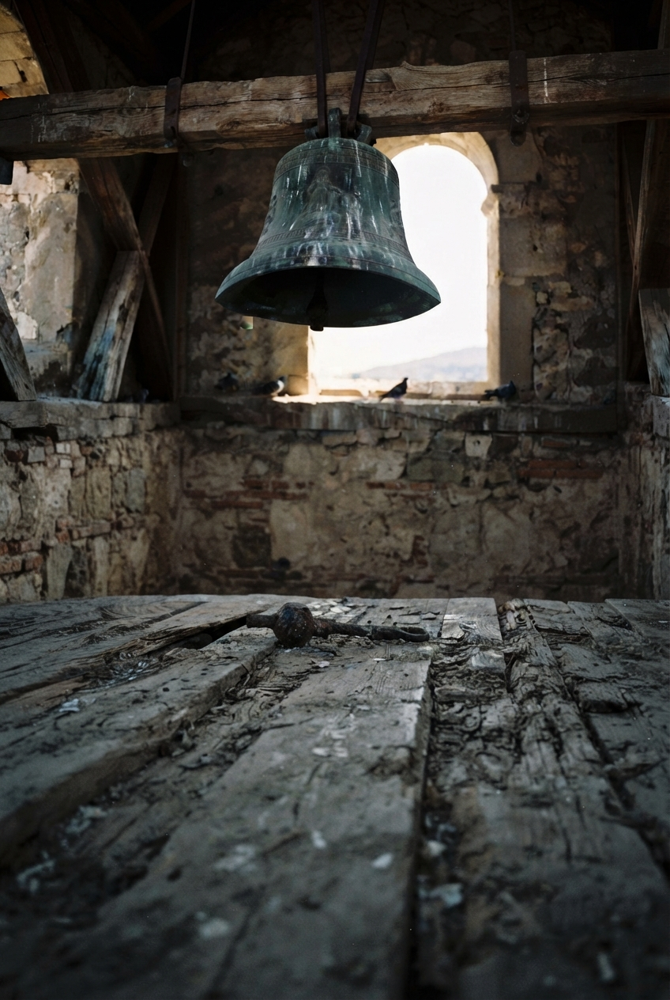

У меня украли. Это случилось не в один момент, а как-то странно растянулось во времени: сперва были перебои, проблемы с доступом, повторные и более кратные перезаписывания без видимого результата. Как будто муха в стеклянной банке: мечется из стороны в сторону, а вылететь не может — так и мой контент никак не мог выйти из электронного локального чрева на бескрайние пути.
Я не сразу понял, что это уже случилось… Осознание отказывалось действовать рационально: была надежда на ошибку железа, кода; была надежда, что это всё из-за туннелей, которые выбрасывают организованный трафик то в Бремен, то в Калькутту.
Сколько это было часов — не сказать; сколько это было труда — не посчитать; сколько там было меня — не оценить. Дышал, засыпал и просыпался, переделывал и усовершенствовал, переделывал усовершенствования и бился почти сутки над, казалось бы, мелочью: никак нельзя было допустить проседания в качестве, ритме и темпе, силе высказывания и молчаливого осознания.
И всё, пришло время это понять. Неимоверно тяжело это принять, а уж действовать нет не только ресурсов, но даже воли. Пустота.
Как будто в раннем детстве — в те годы, когда вообще ещё мало чего понимаешь — по дико опасному стечению обстоятельств стоишь на краю ледника: черная бездна невидимого в полной темноте льда гипнотизировала и манила; яркое июньское солнце просачивалось сквозь крохотные щелочки, высвечивая кружащиеся в темноте пылинки: тонкий лучик резал ледяной холод. Бездна.
Тогда меня спасли — спохватились и вытащили — непонимающего и глупого — с самого края глубокой деревенской ямы, которую выкопали в середине 50-х и хранили там продукты, пока не появился гудящий «бирюзовый».
Голова кружится, и мысли цепляются за надежду: а вдруг восстановится? Ждать тягостно, не ждать — невозможно.
Пальцы перебирают кнопки, часто промахиваясь, неровно отстукивая ритм. Это помогает. Пока.
У меня украли. Почту. От проекта.
Проект «Второй звонок».